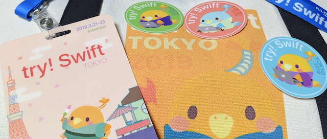

3月21日（1日目）
10:00 - native macOS application、またはAppKitの世界
- CotEditor
- https://github.com/coteditor
10:25 - ⚡️🎤脱Swiftリテラル初心者
- リテラル表記がIntになるまで
- AST -> Sema でBuilt-in リテラルに変換
- CompilerProtocol.Swift
- SE-0213
- Swift 5.0 SILからLiteral が変更されてる
- CGFloat はアーキテクチャによって Float, Double を使い分けている
- CoreGraphic
10:35 - アクセシビリティのためのカラーコントラスト
- 資料
- https://raw.githubusercontent.com/emarley/ColorContrast/master/ColorContrast.pdf
- WCAG20(https://www.w3.org/TR/WCAG20/)
- 4.5:1 以上のコントラスト比
- 理想は 7:1
- チェック
- https://webaim.org/resources/contrastchecker/
- Apple
- Dark Mode
- OLED
- macOS
- NSColor.labelColor
11:30 - Swift Light
@bugkrusha Glowforge
- iOSでSVG
- SVG の translation と CoreGraphic の 座標系が異なる?ので注意
11:55 - ⚡️🎤限定的なimportの明示とその効果
- import のオプション
- attributes
- submodule
- SceneKit
- importKind
- 優先的にimportを指定できる
- バイナリサイズやビルド時間は変わらない
- コンパイラが最適化してる
- 今まで通りでOK
12:05 - protocol/extensionにジェネリクスを入れたい
- HLIST(Heterogeneous List)
- 複数の型が入るListを作りたい
12:30 - Keypath入門
- KeyPath swift4
- Keypathを使えば protocol SettingsEntityを定義することも可能
- KeyPath
- Generic UI家できる SettingsEntity
- KeyPath Libs
- Kuery
- Keypathkit
- appventure.me
14:30 - テストケースでMemory Leakを発見する
- XCTAssertNoLeak
- https://github.com/tarunon/XCTAssertNoLeak
14:55 - ⚡️🎤PixarのようなグラフィックをSwiftで実現する
- Ray tracing in Swift
- https://github.com/kapsy/swift_ray_tracer
15:05 - ARKitのアプリを作ろう
- ARAnchor
- ARWorldMap
- https://github.com/namratabandekar/talks
15:30 - ⚡️🎤Introducing SourceKit-LSP
- LSPが定義されていればXcodeで扱うことが可能
- https://github.com/apple/sourcekit-lsp
15:40 - Swift Server Update
@tomerdoron in apple
- Swift SErver Ecosystem
- Swift でサーバー
- C bridge が簡単
- No ガーベージコレクション
- Lib
- Amazon smoke framework
- SwiftNIO
- Server
- Metrics Logging Tracing
- https://peter.bourgon.org/blog/2017/02/21/metrics-tracing-and-logging.html
- SwiftPM
- Server Working Group
- https://swift.org/server/
- https://github.com/apple/swift-docker
- https://github.com/apple/swift-log
- https://github.com/vapor/nio-postgres
- https://github.com/Mordil/nio-redis
- SwiftNIO
- HTTP/2, SSL
- boringssl
- https://forums.swift.org/t/discussion-server-metrics-api/19600
16:35 - SwiftのアプリでCやC++、Objective-Cのフレームワークを使おう
- 1996: Apple Objective-C
- Dependences, Wrappers, Recap
- Pure Cであれば module で行ける
- Wrapper
- Objective-C: NS_SWIFT_NAME()
- https://github.com/TokyoBirdy
17:00 - ⚡️🎤MachObfuscator
- https://github.com/kam800/MachObfuscator
17:10 - Siri ShortcutsとNSUserActivityによるエンゲージメント推進
- https://github.com/niclaughter/SiriShortcuts
- 参考: https://www.tryswift.co/events/2018/nyc/#siri
- Let Them Say What They Want: Adding Siri Shortcuts
17:35 - try Prototype!
- Prototype Mindset
3月22日（2日目）
10:00 - 魔法の法則
- Brandon Ssanderson
- 王たちの道、ミストトーン
- 3つの法則
- 作者が魔法でまんぞするかユーザの理解に反比例
- ユーザに何が起きているか説明する責任
- 質問を予測
- 制限は権力よりも重要です limitations > powers
- できないことはできることよりも面白い
- キャラクタは何ができないか
- 成約は創造的であることを con force creativlty
- 新しいものを追加する前に既存のものを拡張する
- 隠された深さを発見することはexciting
- Brandonのキャラクタには、常に別の秘密がある
- 作者が魔法でまんぞするかユーザの理解に反比例
- Arthur C. Clarke
-
iPhone: Sand, Metal, SAme wired mineralをいい感じに混ぜてる
-
Swift の型システムを使う
- ドキュメントと診断
- @available
- 無効のmethod、置き換えのmethodなど定義できる
- @available
- どんな制限に従うか
- 2
- 3
- Refactor and evolve
- サポートするものがあるかどうか
10:25 - ⚡️🎤ポートレートモードを自作しよう
- https://github.com/koooootake/Portrait-without-Depth-ios
10:35 - Swiftでソーシャルネットワークをつくろう
- Kitura
- Allegro, bit.ly/swiftallegro
- HELM
- Prometheus
- OpenAPI
- API documentation
- LSP: language server protocd
- Production
- onlineswiftplayground.run
- www.agenda.com
- www.bankingofthings.io
- ibm.biz/trykitura
- slack.kitura.io #tryandwin
11:30 - Swift Hardware Hacking
- Geany: Ras pi IDE
- MCP3008: デジアナ変換
- Photoresistor
- Load cell: 荷重センサ
- PureSwift
- https://github.com/PureSwift
- iOS: CoreBluetooth API
11:55 - ⚡️🎤SwiftSyntax で便利を実現する基礎
- SwiftSyntax
- https://github.com/apple/swift-syntax
- Slide
- https://speakerdeck.com/orgachem/how-to-use-swiftsyntax-for-better-productivity-japanese-version
12:05 - Swift type metadata
- let metadata: Cell.Type = Cell.self
- SwiftCore
- SwiftRuntime
- stdlib/puclic/core/Mirror.swift
- stdlib/puclic/core/Misc.swift
- @_silgen_name("swift_getTypeName")
- Nominal Type Descriptor
- Type Name
- docs/ABI/TypeMetadata.rst
- Relative Pointer
- include/swift/Basic/RelativePointer.swift
- Alllocate instance, Dynamic method dispathc(VTable), Reflection(Mirror)
- Method swizzling
- FnctionRef
- Zewo/Reflection, wickwirew, alibaba/HandyJSON, kateinoigakukun/StubKit
12:30 - モバイルのデザインシステムを構築する
- http://bradfrost.com/blog/post/atomic-web-design/
- https://medium.freecodecamp.org/how-to-build-a-design-system-with-a-small-team-53a3276d44ac
- https://github.com/airbnb/epoxy
14:30 - Swiftにおける音の成形
- シンセサイザー
- Roland D-50: PS1
- Oscillator
- Amplitude, Freq, Shape
- y = 440 * 2^(x - 49 / 12)
- CoreAudio
- AudioStreamBasicDescription
- 複雑
- AudioKit
- 容易に扱える
- https://github.com/AudioKit/AudioKit
- PWM pulse width modulation
- パルス幅によって特性が異なる
- AKPWMOs
- Envelopes
- ADSR (Attack, Decay, Sustain Release)
- Pluck Saound
- Pad Sound
- AKSomeEffect
- Filter
- Notch Filter: 中だけ残す
- Resonance, chorus, reverb...
- Audulus
14:55 - ⚡️🎤iOS端末を利用した心理学研究の背景と展望
- 回すの動作などの心理実験にiPadなど利用してる
15:05 - SwiftCheckで始めるProperty-based Testing
- Property-based test vs Example-based tesst
- SwiftCheck
- https://github.com/typelift/SwiftCheck
- Arbitrary
- Pointなどカスタムする場合Arbitrary Protocolに準拠
- Shrinking
- 境界を探してくれるぽいやつ
- Ramdom, Synmetry, Fast vs Slow
15:30 - ⚡️🎤All about linking libraries
- Bundle: ディレクトリ構造がある
- modulemapあり
- Framework search path
- modulemapなし
- Modulemap
- Import Paths
- Bridgeing Header
- Modulemap
- Dynamic Frameworkは実行時にリンクできない
- Static Framework はコンパイル時にリンクできない
15:40 - 賢者のString(The Ohilosopher's String)
@Ilseman in Apple
standerd library team
- Unicode compliant
- Code Unit -> Unicode Scalar -> Charactor
-
Degenerate Graphemes
-
jobに応じて UnicodeScalarをつかう。人間的にはコレクション
- Swift4.2とかでメモリ小
- Swift5.0 // UTF-8 String
- https://swift.org/blog/utf8-string/
- Feature
- Unicode enthuslasts unite
- String Essentials
- ...
- Swift5 Formatting String
- printScalarInfo
- U+16HEX
- DefaultStringInterpolation(Custom Interpolation)
16:35 - アセンブリ、君ならできる！
- https://www.swiftcommunitypodcast.org/
- Assembly
- デバッグ、Cocoaフレームワークの理解に役立つ
- Registers
- x86 16個
- 一種のメモリ
- Mnemonic
- CPU instraction
- mov, ret, cmp, nop(遅延処理したいとき), jne...
- Intel: instruction dect source
- Calling Convention(呼び出し規約)
- SystemV
- rdi, rsi, rdx, rcx, r8, r9, rax
- Objective-C
- po $rdi
- LLDB
- b
- po (SEL)$rsi
- po (id)$rdx
- cpo
- Hopper Disassembler
- https://www.hopperapp.com/
17:00 - ⚡️🎤Swiftコンパイラにコントリビュートする
- parse ast sema sil ir llvm *.o
- libSyntax
- AST
- SIL
17:10 - Core Dataを守るために
- Core Data stack
- -com.apple.CoreData.SQLDebug 4
- -com.apple.CoreData.Logging.stderr 1